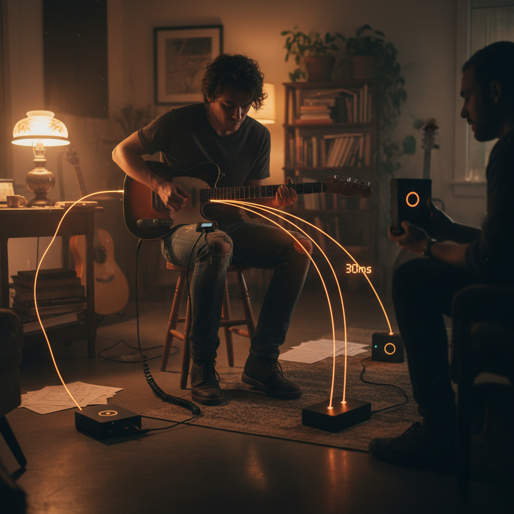
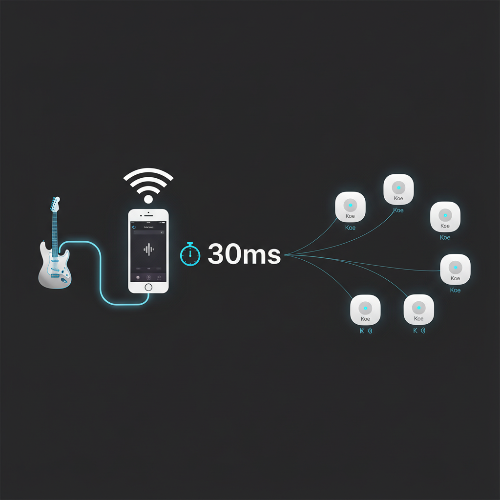
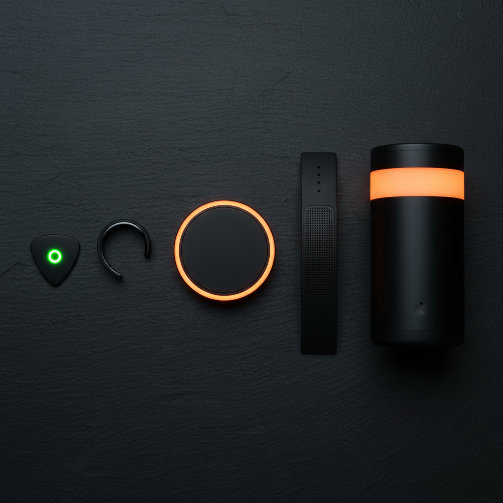
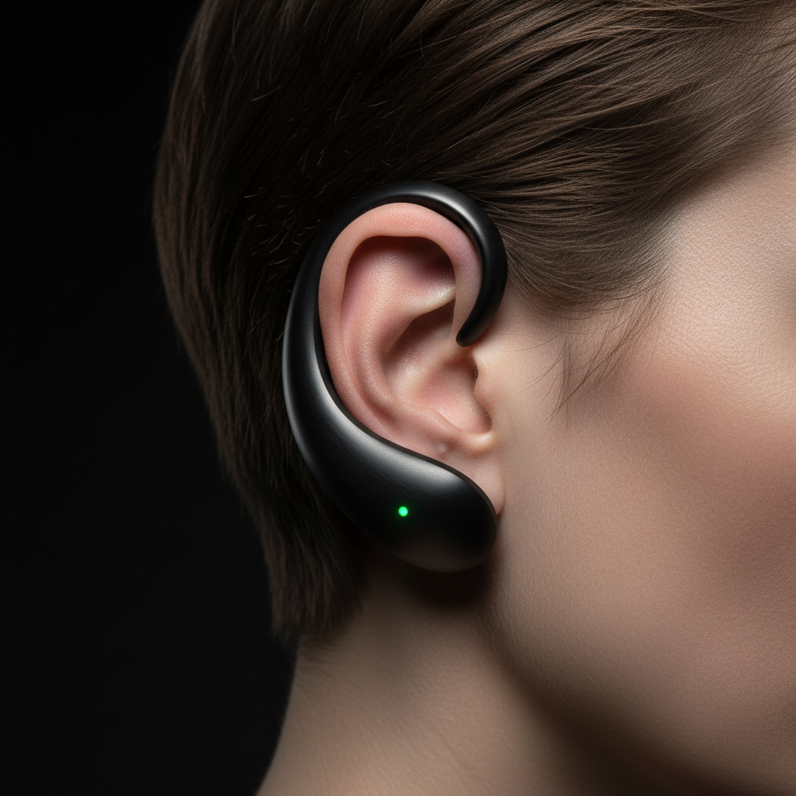
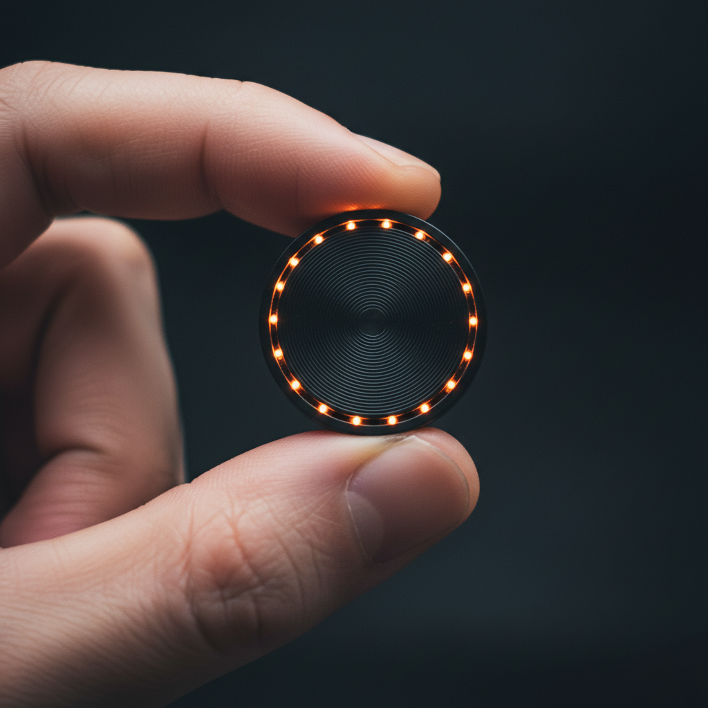
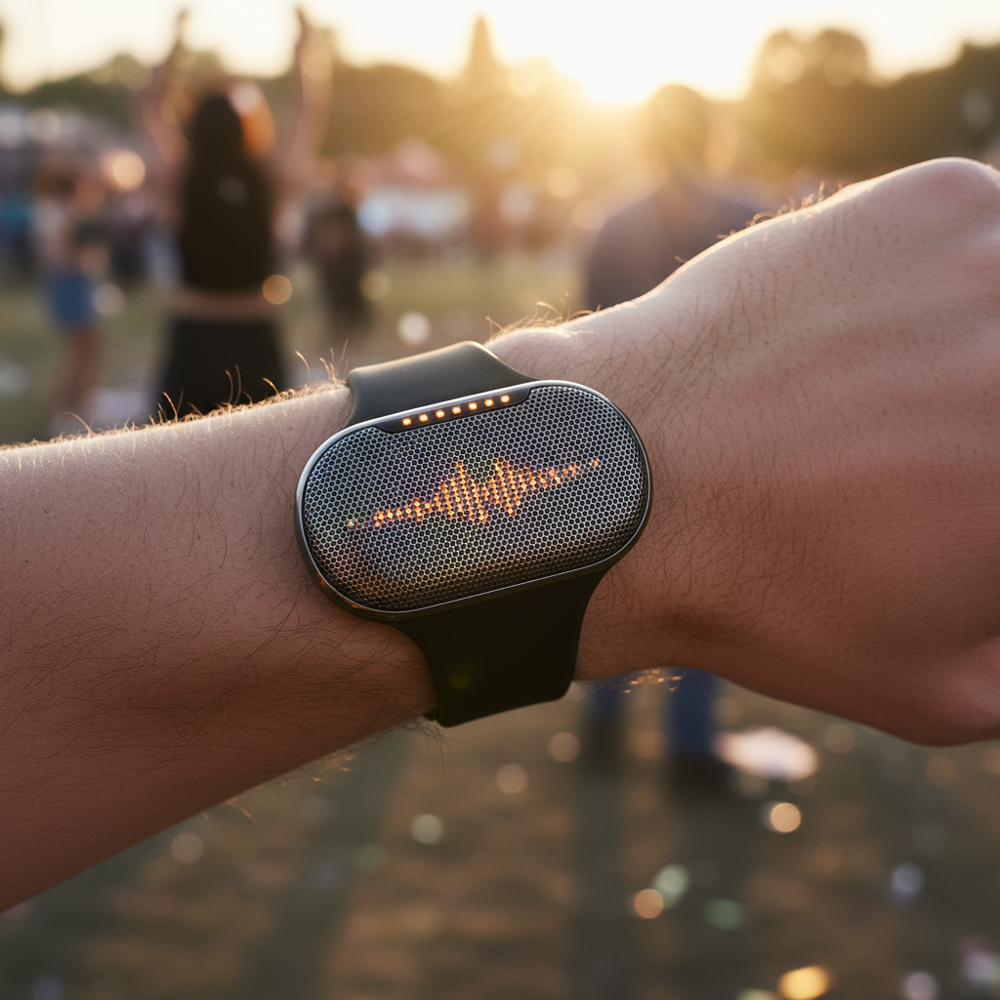
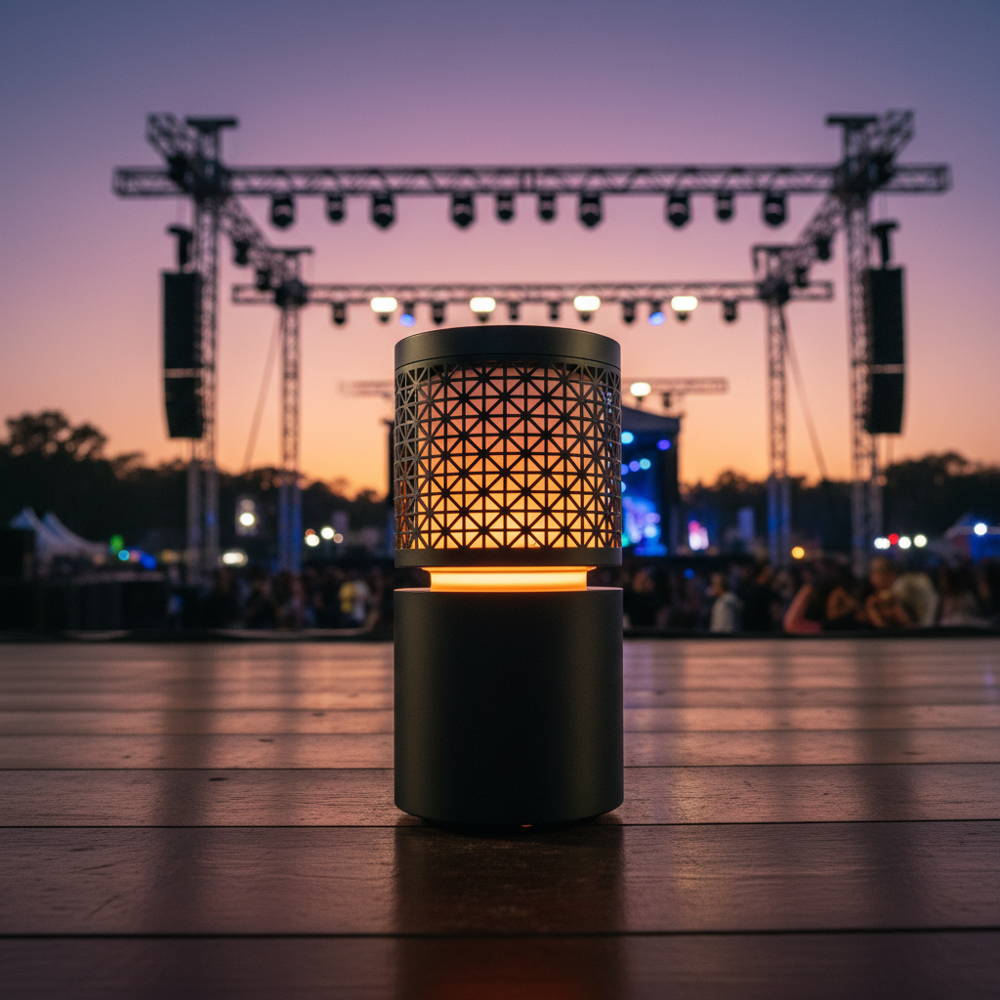
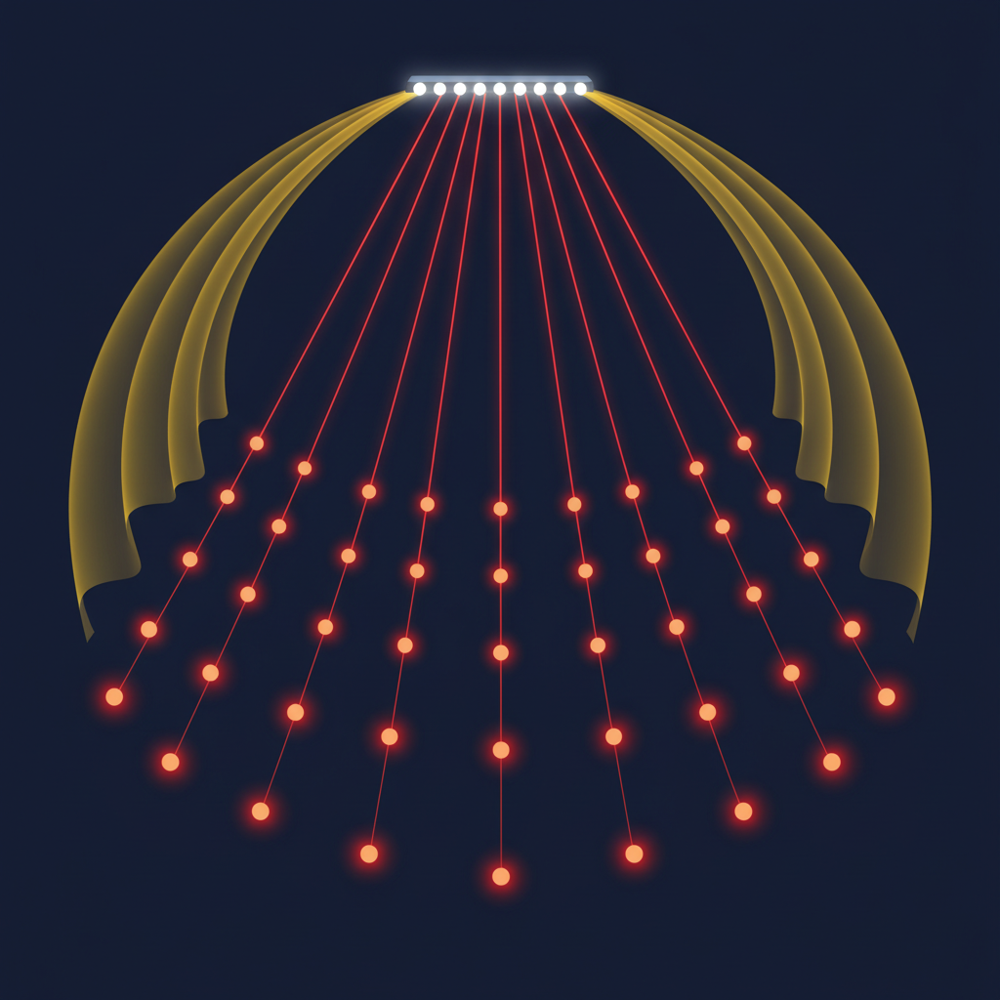

It remembers the conversation you had at breakfast and reminds you before your afternoon meeting. 5 grams. No screen. Your memory, backed up.
Koe is an open-source project in active development

Plug a cable into your iPhone. Audio streams to every Koe device on the same WiFi in 30ms. No rehearsal studio needed. Your living room is the stage.


Pick · Ear Cuff · Coin · Band · Lantern
Concept renders — prototype in progress

At 25 x 30mm and just 5 grams, Koe is smaller than an AirTag. Clip it, pin it, or hang it from a chain. It records everything you say and hear. No buttons to push. No screen to check.

Matte ceramic finish. Rounded edges that fit naturally between your fingers. One LED that breathes softly. No logos. No labels. Just a quiet piece of tech that feels like jewelry.

Koe STUDIO adds a 28mm full-range driver. Place it on your desk for meetings, or clip it to your bag for outdoor conversations.

Medium-press the button to switch from Koe mode (AI assistant) to Soluna mode (P2P audio mesh). At a festival, conference, or any event, multiple Koe devices on the same WiFi form an instant audio channel. No server. No app. No setup. Just speak.
This is something no other AI wearable can do. Humane Pin, Rabbit R1, Friend pendant -- none of them talk to each other. Koe devices do.

Sound (yellow) vs radio (red) — radio is 870,000x faster. That's why CROWD arrives before the sound.
Five AI agents work together in the cloud. Your device is the ear and the mouth.
Monitor and control every device in real-time. Sync status, battery, volume — all from your browser.
Monitor and control every device in real-time. Sync status, battery, volume — all from your browser.
Try the dashboard →Three models. Same AI brain. Pick the body that fits your life.
| MINI | BAND | STUDIO | |
|---|---|---|---|
| Size | 25 x 30 x 9mm | 42 x 18 x 11mm | 50 x 70 x 20mm |
| Weight | ~5g | ~25g | ~65g |
| Wear style | Pendant / Clip / Pin | Wristband | Clip / Stand |
| MCU | ESP32-S3 dual-core 240MHz, 8MB Flash, 2MB PSRAM | ||
| Wireless | WiFi 802.11 b/g/n + Bluetooth LE 5.0 | ||
| Microphone | 1x MEMS | 2x MEMS stereo | 2x MEMS wide (40mm spacing) |
| Mic SNR | 61dB (INMP441, I2S digital output) | ||
| Speaker | -- (BLE out) | 10 x 8mm | 28mm full-range |
| Frequency range | -- | 300Hz - 8kHz | TBD (pending measurement) |
| Max SPL | -- | ~70dB | ~85dB @ 1m est. |
| DSP | VAD only | VAD | VAD + AEC + EQ |
| Battery | 200mAh | 120mAh | 2000mAh |
| Recording time | ~9h est. | ~5h est. | ~24h est. |
| Active streaming | ~3h est. | ~2h est. | ~6h est. |
| Charging | USB-C | Magnetic pogo | USB-C |
| Charge time | ~30 min | ~20 min | ~90 min |
| LED | 1x RGB | 5x RGB strip | 5x RGB strip |
| Input | Side button | Capacitive touch | Button |
| Water resistance | TBD | TBD | TBD |
| Color | Obsidian / Ceramic White | Black / White / Green | Obsidian |
| Price (target) | TBD | TBD | TBD |
Koe is open-source hardware. Download the schematics, print the case, flash your own firmware. We sell the device for people who don't want to solder.
Koe is a tiny AI device that always listens to your surroundings and lets you recall information when you need it. One device is an AI assistant. When many devices come together, they form a synchronized audio mesh — turning a festival crowd into an orchestra.
We're building the prototype now. The hardware is open source, so you can download the schematics and BOM to build your own today. A retail product is not yet available. Star the GitHub repo to follow progress.
Koe runs Voice Activity Detection on-device. Only actual speech is sent to the cloud. Idle audio stays in a 30-second local ring buffer and is never transmitted. The firmware is open source — anyone can verify exactly what is sent.
Other AI wearables are shrunken smartphones — one device, one user. Koe gets better when more people use it. 100 Koe devices in sync become a distributed speaker system. No other wearable can do device-to-device audio. And it's open hardware.
Yes. KiCad schematics, BOM, Rust firmware, and 3D-printable case files are all open source. An ESP32-S3 dev board + INMP441 mic + MAX98357A amp on a breadboard gets you a working prototype for ~$40. See parts list →
Koe is open source. Hardware design, firmware, acoustics, product design — all contributions welcome.